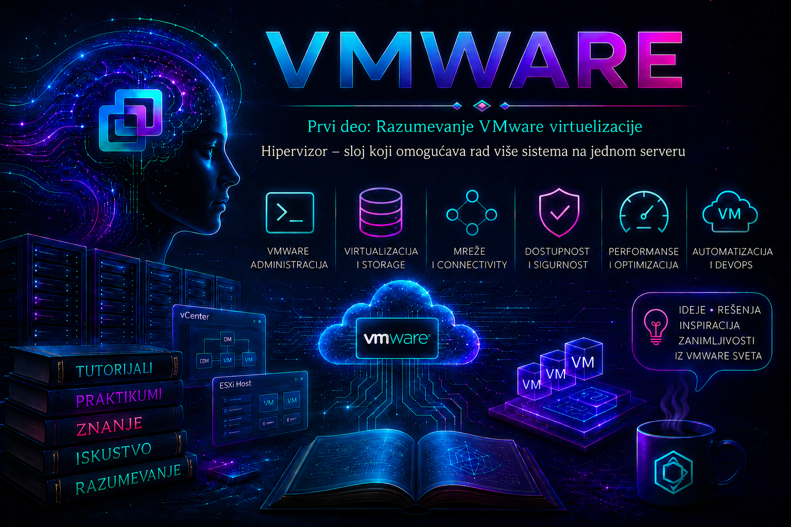

VMware

Prethodna lekcija pokazala je kako virtuelizacija razdvaja računarsku uslugu od jednog konkretnog fizičkog servera. Sada prelazimo na komponentu koja to razdvajanje zaista sprovodi: hipervizor (hypervisor). On kontroliše fizičke resurse hosta, predstavlja virtuelni hardver gostujućim sistemima, raspoređuje konkurentne zahteve virtuelnih mašina i održava granice njihove izolacije.
Hipervizor zato nije samo program koji „otvara još jedan operativni sistem”. U enterprise infrastrukturi on je izvršni i kontrolni sloj od čije ispravnosti zavise dostupnost, performanse i bezbednost svih radnih opterećenja na hostu. Pogrešna odluka na tom sloju — nepodržan drajver, prevelik overcommitment, neispravna mrežna redundansa ili neplaniran restart — ne pogađa jednu aplikaciju, već potencijalno sve virtuelne mašine koje host izvršava.
Zašto je hipervizor potreban
Zamislimo server sa 32 fizička procesorska jezgra, 256 GB memorije, više mrežnih adaptera i pristupom shared storage sistemu. Ako na njemu radi samo jedan operativni sistem, svi resursi pripadaju tom sistemu, iako ih aplikacija možda koristi samo povremeno. Organizaciji su istovremeno potrebni domen kontroler, veb-server, aplikativni server, baza podataka, monitoring i razvojno okruženje. Bez virtuelizacije, svaka uloga bi mogla zahtevati poseban fizički server; hipervizor omogućava da se više izolovanih sistema konsoliduje na manji broj snažnijih hostova.
Konsolidacija ne znači da su fizički resursi postali neograničeni. Hipervizor ih vremenski raspoređuje, mapira i kontroliše. Administrator može jednoj virtuelnoj mašini dodeliti dva vCPU-a i 8 GB RAM-a, drugoj osam vCPU-a i 64 GB RAM-a, ali ukupan kvalitet rada i dalje zavisi od stvarne potražnje, NUMA topologije, propusnosti storage-a, mreže i rezervnog kapaciteta potrebnog za kvar ili održavanje hosta.
Slojevita arhitektura i osnovni pojmovi
Pojednostavljen tok je fizički hardver → hipervizor → virtuelni hardver → gostujući operativni sistem → aplikacija. Fizički server na kome hipervizor radi naziva se host, dok je operativni sistem unutar virtuelne mašine guest. Jedan host može izvršavati Windows, Linux i specijalizovane virtuelne uređaje istovremeno, pri čemu svaki gost vidi sopstveni skup standardizovanih virtuelnih komponenti.
| Pojam | Značenje | Administratorska posledica |
|---|---|---|
| Host | Fizički server sa instaliranim hipervizorom. | Kvar ili održavanje hosta utiče na sve VM-ove koji nisu prethodno migrirani ili zaštićeni mehanizmom oporavka. |
| Guest | Operativni sistem koji radi unutar VM-a. | I dalje zahteva patching, hardening, monitoring i backup; izolacija hipervizora ne obezbeđuje gosta automatski. |
| vCPU | Virtuelni procesor koji hipervizor raspoređuje na fizičke logičke procesore. | Broj vCPU-a nije garantovan broj fizičkih jezgara niti trajno rezervisana snaga. |
| vRAM | Memorija deklarisana u konfiguraciji VM-a. | Dodeljena, aktivna, potrošena i rezervisana memorija nisu isti pokazatelji. |
| VMDK | Virtuelni disk predstavljen gostu kao blok-uređaj. | Njegove performanse zavise od datastore-a, kontrolera, reda I/O zahteva i konkurencije drugih opterećenja. |
| vNIC | Virtuelna mrežna kartica povezana sa port grupom. | Povezanost zavisi od virtuelnog switch-a, VLAN-a, uplinkova, fizičkog switch-a i politike bezbednosti. |
| VMkernel | Jezgro ESXi-ja koje raspoređuje CPU i memoriju i obrađuje storage i mrežni I/O. | Njegovi događaji i metrike ključni su pri dijagnostici problema hosta. |
Hipervizori Tipa 1 i Tipa 2
Hipervizor Tipa 1 radi neposredno na serverskom hardveru i zato se naziva bare-metal. VMware ESXi pripada ovoj grupi i namenjen je serverskoj i data-centar infrastrukturi. Hipervizor Tipa 2, kao VMware Workstation ili Fusion, radi iznad host operativnog sistema opšte namene. On je praktičan za učenje, razvoj i lokalno testiranje, ali dostupnost, drajveri, bezbednosna površina i raspoređivanje resursa zavise i od tog host OS-a.
| Kriterijum | Tip 1 | Tip 2 |
|---|---|---|
| Položaj | Direktno na podržanom serverskom hardveru. | Kao aplikacija na Windows, Linux ili macOS hostu. |
| Primena | Produkcija, klasteri, centralno upravljanje i automatizacija. | Radna stanica, laboratorija, razvoj i demonstracija. |
| Upravljanje drajverima | Kompatibilnost se proverava prema Broadcom Compatibility Guide-u i OEM image/firmware matricama. | Većina fizičkih uređaja zavisi od drajvera host OS-a. |
| Dostupnost | Projektuje se sa redundantnim hostovima, mrežom, storage-om i klasterskim servisima. | Kvar ili restart desktop host OS-a zaustavlja sve lokalne VM-ove. |
| Preporučeni izbor | Serverska radna opterećenja i enterprise infrastruktura. | Bezbedna laboratorijska vežba pre rada na ESXi-ju. |
ESXi kao bare-metal hipervizor
ESXi je specijalizovana platforma sa malim izvršnim slojem. VMkernel obavlja raspoređivanje procesora i memorije, upravlja uređajima, storage i mrežnim putanjama i izvršava virtuelne mašine. Servisi kao hostd pružaju lokalni upravljački interfejs, dok agent vpxa posreduje između ESXi hosta i vCenter Servera. Prekid vCenter-a zato ne gasi automatski VM-ove: data plane na ESXi hostu nastavlja da ih izvršava, iako centralno upravljanje i neke kontrolne funkcije nisu dostupne.
U aktuelnoj Broadcom dokumentaciji za vSphere 9 platforma se na pojedinim mestima označava kao ESX, dok su u vSphere 7 i 8 dokumentaciji, interfejsima i velikom delu administratorske prakse uobičajeni nazivi ESXi i ESXi host. U ovoj lekciji koristimo ESXi kao prepoznatljiv naziv hipervizora, ali administrator mora proveravati dokumentaciju tačno za izdanje, build, licencni paket i deployment model koji organizacija koristi. Funkcije centralnog upravljanja, klastera, migracije i automatizacije nisu osobine samog izolovanog hosta niti su sve dostupne u svakom izdanju.
Produkcioni host mora biti na zvanično podržanoj kombinaciji serverskog modela, procesora, I/O kontrolera, mrežnih adaptera, firmware-a i ESXi/ESX izdanja. Sama činjenica da instalacija uspeva nije dokaz podrške. Pre nabavke i nadogradnje proveravaju se Broadcom Compatibility Guide, OEM dokumentacija i interoperability matrice, a zatim se planira rezervni kapacitet, povratak na prethodno stanje i mogućnost evakuacije VM-ova.
Kako hipervizor upravlja procesorom
Svaki vCPU predstavlja jedinicu izvršavanja koju VMkernel scheduler raspoređuje na fizičke logičke procesore. Virtuelna mašina sa četiri vCPU-a nema četiri trajno rezervisana fizička jezgra; njeni vCPU svetovi konkurišu za vreme procesora zajedno sa drugim VM-ovima i sistemskim svetovima. Hardverske instrukcije za virtuelizaciju procesora, kao Intel VT-x ili AMD-V, omogućavaju efikasno i kontrolisano izvršavanje privilegovanog koda gosta.
Overcommitment CPU-a može povećati iskorišćenost hosta, ali prevelik broj vCPU-a često pogoršava, umesto da poboljša rad: scheduler mora pronaći dovoljno vremena za sve vCPU-ove, raste %RDY, a NUMA lokalnost može biti nepovoljnija. Zato se VM dimenzioniše prema merenoj potražnji, ne prema ideji da „više vCPU-a ne može da škodi”. Rezervacije se koriste samo kada postoji opravdana potreba za garantovanim kapacitetom; limit može prikriveno usporiti VM čak i kada host ima slobodan CPU, a shares imaju smisla tek u uslovima konkurencije.
Kako hipervizor upravlja memorijom
ESXi mapira memoriju gosta na mašinsku memoriju hosta uz hardversku podršku kao Intel EPT ili AMD RVI. Konfigurisana vRAM, memorija koju guest smatra zauzetom, aktivno korišćena memorija i fizička memorija koju host trenutno troši nisu ista veličina. Administrator zato ne donosi zaključak iz jednog procenta, već koreliše guest metrike sa host metrikama i trendom potražnje.
Kada nastane pritisak, ESXi može koristiti tehnike povraćaja memorije. Balloon driver u VMware Tools-u traži od gosta da oslobodi stranice na kontrolisan način; kompresija može odložiti skuplji disk I/O; host swapping je poslednja, performansno nepovoljna mera. Kontinuirano ballooning ili swapping nije „optimizacija”, već dokaz da treba proveriti ukupnu potražnju, rezervacije, limite, raspored VM-ova i kapacitet klastera. Memorijska rezervacija štiti kritično opterećenje, ali istovremeno smanjuje fleksibilnost i može onemogućiti uključivanje ili migraciju drugih VM-ova.
Storage i virtuelni diskovi
Gost vidi virtuelni kontroler i disk, dok hipervizor prevodi njegove zahteve u I/O prema VMDK-u, datastore-u i fizičkim putanjama. Datastore može biti zasnovan na VMFS-u, NFS-u, vSAN-u ili drugom podržanom mehanizmu. Performanse zavise od latencije uređaja i kernela, dubine redova, multipath politike, zagušenja mreže za IP storage, konkurencije drugih VM-ova i karakteristika samog storage sistema.
Thin provisioning omogućava da se prostor fizički zauzima postepeno, ali ne uklanja obavezu nadzora kapaciteta. Popunjen datastore može zaustaviti upise i ugroziti više VM-ova. Snapshot čuva lanac promena i koristan je kao kratkotrajna operativna tačka za kontrolisanu promenu; nije backup, nije arhiva i dugotrajan ili veliki snapshot može povećati latenciju, potrošnju prostora i složenost konsolidacije.
Virtuelna mreža
vNIC virtuelne mašine povezuje se sa port grupom na standardnom ili distribuiranom virtuelnom switch-u. Saobraćaj između VM-ova na istom hostu i odgovarajućem segmentu može ostati unutar virtuelnog switch-a; saobraćaj van hosta prolazi kroz fizički uplink, fizičku mrežu, VLAN konfiguraciju i dalje mrežne servise. VMkernel adapteri nose upravljački i infrastrukturni saobraćaj, na primer management, vMotion, IP storage ili druge omogućene servise.
Redundansa zahteva više od dve priključene kartice. Potrebni su pravilno projektovani uplinkovi, fizički switch-evi, VLAN-ovi, teaming i failover politika, MTU usklađen duž cele putanje i odvojeni failure domeni. Pogrešan VLAN može izolovati VM ili host; neusklađen MTU često daje parcijalnu povezanost; oba aktivna uplinka na istom fizičkom switch-u ne štite od kvara tog switch-a.
Virtuelni uređaji, kompatibilnost i VMware Tools
Hipervizor gostu predstavlja stabilne virtuelne uređaje nezavisno od većine promena fizičkog hardvera. Izbor virtuelnog mrežnog ili storage kontrolera utiče na performanse i podršku gosta. Paravirtuelizovani uređaji, kao VMXNET3 ili VMware Paravirtual SCSI kada ih konkretan guest i workload podržavaju, obično smanjuju overhead, ali prelazak sa postojećeg boot kontrolera bez prethodno instaliranog drajvera može učiniti sistem nepodiznim.
Verzija virtuelnog hardvera određuje mogućnosti koje VM može koristiti i vezana je za kompatibilnost ESXi izdanja. Nadogradnja kompatibilnosti VM-a nije rutinski klik bez posledica: proveravaju se guest OS, VMware Tools, backup i DR proizvodi, ciljni hostovi i mogućnost povratka. VMware Tools donosi optimizovane drajvere, vremensku i statusnu integraciju i mogućnost urednog gašenja gosta, ali nije sam hipervizor niti zamenjuje sistemsku administraciju gosta.
Izolacija i bezbednosna granica
Hipervizor sprečava da jedan guest neposredno čita memoriju ili uređaje drugog gosta i kontroliše privilegovane operacije. Ta izolacija je snažna bezbednosna granica, ali nije apsolutna garancija. Ranjivost hipervizora, nebezbedan management interfejs, kompromitovan administratorski nalog, pogrešna mrežna politika ili passthrough uređaj mogu povećati zajednički rizik.
- Management mrežu treba ograničiti, segmentirati i nadzirati, a administratorski pristup zasnivati na najmanjim potrebnim privilegijama i MFA gde je podržan.
- SSH i ESXi Shell ostaju isključeni kada nisu potrebni; privremeno uključivanje mora imati vlasnika, vremensko ograničenje i audit trag.
- Hostovi se patchuju prema proceni rizika i podržanoj lifecycle proceduri, nakon validacije backup-a konfiguracije, kapaciteta i plana evakuacije.
- Guest OS se zasebno hardenuje, patchuje i štiti; kompromitovan guest i dalje može napadati mrežne servise i podatke za koje ima pristup.
- Direktan pristup uređaju, SR-IOV ili PCI passthrough primenjuje se samo uz jasan zahtev, jer može ograničiti snapshot, migraciju, HA ponašanje ili portability VM-a.
Performanse, overcommitment i NUMA
Overhead savremene hardverski potpomognute virtuelizacije često je mali, ali nije nula. On nastaje pri raspoređivanju, prevođenju memorijskih mapa, emulaciji ili paravirtuelizaciji uređaja i obradi I/O-a. Kritično je razlikovati overhead od konkurencije: VM može biti spor zato što čeka CPU, memoriju, storage ili mrežu, iako nijedna pojedinačna komponenta nije „pokvarena”.
| Resurs | Signal za istragu | Pogrešan zaključak | Bezbedna prva akcija |
|---|---|---|---|
| CPU | Rast %RDY, %CSTP ili trajno visoka potražnja. | Odmah dodati još vCPU-a. | Proveriti desizing, limite, shares, NUMA topologiju i konkurenciju na hostu. |
| Memorija | Balloon, compression ili swap uz latenciju aplikacije. | Guest „ima slobodan RAM”, pa host ne može biti uzrok. | Korelisati active/consumed memoriju, guest metrike, rezervacije i klasterski kapacitet. |
| Storage | Visok DAVG, KAVG ili GAVG, redovi i timeout događaji. | Svaki storage problem je kvar diska. | Odvojiti latenciju uređaja, VMkernel reda i gostujućeg sloja; proveriti putanje i promene. |
| Mreža | Dropped paketi, greške, zasićen uplink ili samo jedan aktivan put. | Ping potvrđuje da je mreža zdrava. | Proveriti vNIC, port grupu, VLAN, uplink, fizički switch, MTU i end-to-end gubitke. |
NUMA je posebno važna na višesoketnim hostovima. Velika VM može obuhvatiti više NUMA čvorova i češće pristupati udaljenoj memoriji. Administrator ne podešava napredne NUMA parametre naslepo: najpre pravilno dimenzioniše VM, proverava fizičku topologiju i merenja, a ručne override vrednosti menja samo uz dokumentovan razlog i plan povratka.
Operacije životnog ciklusa VM-a
Power on rezerviše i inicijalizuje potrebne resurse i pokreće virtuelni firmware, boot loader i guest OS. Guest shutdown traži uredno gašenje iz operativnog sistema i obično zahteva ispravne VMware Tools; Power Off je ekvivalent prekidu napajanja i nosi rizik gubitka podataka. Reset je takođe grub postupak. Suspend čuva izvršno stanje, ali nije zamena za backup ili mehanizam visoke dostupnosti.
vMotion migracija premešta izvršavanje uključene VM između kompatibilnih hostova, dok Storage vMotion menja lokaciju njenih datoteka. Mogućnost zavisi od licenci i proizvoda, kompatibilnosti procesora i mreže, zajedničke ili odgovarajuće dostupnosti storage-a i pravilne konfiguracije. VMware HA može restartovati VM na drugom hostu nakon kvara, ali to nije neprekinuto izvršavanje: između kvara i restarta postoji prekid, a aplikaciona konzistentnost i dalje zavisi od dizajna aplikacije.
vCenter nije hipervizor
ESXi izvršava virtuelne mašine; vCenter Server centralizuje inventar, uloge, alarme, zadatke i upravljanje više hostova i klastera. DRS, HA, lifecycle upravljanje, distribuirani switch-evi i druge mogućnosti zavise od tačnog izdanja i arhitekture. Ako vCenter privremeno nije dostupan, postojeće VM obično nastavljaju rad na hostovima, ali je upravljačka sposobnost ograničena. Ako otkaže ESXi host, njegovi lokalno izvršavani VM-ovi prestaju da rade dok ih drugi mehanizam ne oporavi.
Hipervizor takođe nije kontejnerski runtime. Virtuelna mašina sadrži sopstveni kernel gostujućeg OS-a, dok kontejneri tipično dele kernel hosta. Kontejneri mogu raditi unutar VM-ova, pa se ova dva modela često dopunjuju umesto da se međusobno isključuju.
Dostupnost, održavanje, backup i oporavak
Jedan snažan host predstavlja koncentrisan failure domen. Produkcioni dizajn zato planira najmanje jedan kvar ili održavanje bez gubitka potrebnog kapaciteta, redundantne mrežne i storage putanje, odvojene izvore napajanja i proverene procedure oporavka. Shared storage olakšava migraciju i restart na drugom hostu, ali uvodi sopstvenu kritičnu zavisnost; lokalni storage može biti jednostavniji, ali ograničava mobilnost VM-a ako nije deo distribuiranog storage sistema.
Maintenance mode sprečava uobičajeno pokretanje novih radnih opterećenja na hostu i omogućava njegovo pražnjenje pre patching-a, firmware promene ili servisa. Ulazak u maintenance mode nije dokaz da su sve posledice rešene: proveravaju se powered-on VM-ovi, vSphere Cluster Services objekti, vSAN data migration opcija ako postoji, passthrough uređaji, lokalni datastore-i i dovoljan kapacitet preostalih hostova. Produkcioni host se ne restartuje dok evakuacija i poslovno odobrenje nisu potvrđeni.
Image-level backup koristi snapshot mehanizam kao kratkotrajni deo procesa, ali kopija mora završiti na odvojenom backup sistemu i biti testirana kroz restore. Konfiguracija hosta, vCenter-a, mrežnih i storage zavisnosti takođe mora biti dokumentovana i zaštićena. Dostupnost nije backup, replikacija nije automatski backup, a uspešan backup job nije dokaz oporavljivosti bez periodičnog testa vraćanja.
Monitoring, događaji i logovi
Dijagnostika počinje vremenom pojave simptoma, obimom uticaja i poslednjim promenama. Najpre se čuvaju dokazi, pa se menja stanje. Restart management agenata ili hosta može privremeno vratiti upravljanje, ali i ukloniti deo konteksta, prekinuti zadatke ili pogoršati incident; zato nije prva univerzalna mera.
| Izvor | Šta prikazuje | Kada ga povezujemo sa simptomom |
|---|---|---|
/var/run/log/vmkernel.log | VMkernel, storage, mreža, drajveri i uređaji. | PSOD prethodnici, APD/PDL, timeout, path i NIC događaji. |
/var/run/log/hostd.log | Lokalne upravljačke operacije hosta. | Host Client zadaci, API greške i lokalno upravljanje. |
/var/run/log/vpxa.log | Komunikacija ESXi hosta sa vCenter Serverom. | Disconnected/Not Responding stanje uz VM-ove koji i dalje rade. |
/var/run/log/vobd.log | VMkernel observations i događaji relevantni za alarme. | Hardverski, mrežni i storage događaji koji se korelišu sa vCenter alarmima. |
/vmfs/volumes/<datastore>/<vm>/vmware.log | Izvršavanje konkretne virtuelne mašine. | Power operacije, virtuelni uređaji, snapshot i VM-specifične greške. |
U aktuelnim ESXi izdanjima Broadcom KB navodi /var/run/log kao lokaciju aktivnih host logova; istorijski i simbolički prikazi kroz /var/log i dalje se sreću u alatima i starijim procedurama. Pri izvozu support bundle-a bira se opseg koji uključuje potrebne komponente, jer „Base” skup ne mora sadržati sve host i VM logove. Logovi se filtriraju prema preciznom vremenskom prozoru, uz korelaciju sa vCenter događajima, storage i fizičkim switch logovima, BMC/iLO/iDRAC telemetrijom i aplikacionim metrikama.
Praktikum: upoznavanje ESXi hipervizora bez promene stanja
Cilj: identifikovati host, fizičke resurse, VMkernel adaptere, datastore-e i aktivne VM-ove, a zatim povezati prikaz iz vSphere Client-a, PowerCLI-ja i ESXi Shell-a. Vežba je read-only i može se izvesti na laboratorijskom hostu; na produkciji je obavezna prethodna dozvola za pristup i korišćenje naloga sa najmanjim potrebnim privilegijama.
Topologija i preduslovi: jedan ESXi host, opciono vCenter Server, najmanje jedna test VM i administratorska radna stanica sa aktuelnim VCF PowerCLI modulima. Za CLI deo SSH uključite samo u laboratoriji i isključite ga po završetku; u produkciji prednost imaju vSphere Client, API i centralni alati. Zabeležite FQDN hosta, vreme početka i očekivano stanje.
Vežba 1 — inventar kroz vSphere Client
- Otvorite host i na kartici Summary zabeležite proizvod, verziju/build, model servera, CPU, memoriju i trenutno connection stanje.
- U Configure → Networking identifikujte fizičke NIC-ove, virtuelne switch-eve, port grupe i VMkernel adaptere. Ne menjajte teaming, VLAN ili MTU.
- U Configure → Storage pregledajte adaptere, uređaje, putanje i datastore-e; zabeležite kapacitet i slobodan prostor.
- U Monitor pregledajte događaje, alarme i performance grafikone za poslednji sat. Proverite da li početno „zdravo” stanje potkrepljuju događaji i metrike.
Očekivani rezultat i validacija: inventar iz GUI-ja mora se slagati sa planiranom topologijom. Neočekivano degradirana putanja, NIC bez linka, aktivan alarm ili kritično popunjen datastore evidentiraju se kao nalaz; ne „popravljaju” se bez utvrđivanja nameravanog dizajna.
Vežba 2 — read-only PowerCLI provera
Komande se izvršavaju na administratorskoj radnoj stanici. Connect-VIServer uspostavlja sesiju, dok ostale prikazane komande samo čitaju stanje. Koristite FQDN koji odgovara sertifikatu; trajno isključivanje certificate provere nije preporučena produkciona praksa.
Connect-VIServer -Server vcsa.lab.example
$vmhost = Get-VMHost -Name esx01.lab.example
$vmhost | Select-Object Name, ConnectionState, PowerState, Version, Build,
NumCpu, CpuTotalMhz, MemoryTotalGB
Get-VMHostHardware -VMHost $vmhost |
Select-Object Manufacturer, Model, SerialNumber, BiosVersion
Get-VMHostNetworkAdapter -VMHost $vmhost -Physical |
Select-Object Name, ConnectionStatus, Mac, BitRatePerSec
Get-VMHostNetworkAdapter -VMHost $vmhost -VMKernel |
Select-Object Name, IP, SubnetMask, PortGroupName, VMotionEnabled
Get-Datastore -VMHost $vmhost |
Select-Object Name, Type, CapacityGB, FreeSpaceGB
Get-VM -Location $vmhost |
Select-Object Name, PowerState, NumCpu, MemoryGB, Version
Disconnect-VIServer -Server vcsa.lab.example -Confirm:$falseProvera uspeha: naziv, build, hardver, NIC-ovi, VMkernel IP adrese, datastore-i i VM-ovi treba da se poklapaju sa GUI inventarom. Ako se ne poklapaju, prvo proverite da li je izabran isti host i isti vCenter, da li je prikaz osvežen i da li nalog ima privilegije da vidi sve objekte. Ne zaključujte da objekat ne postoji samo zato što nije vidljiv ograničenom nalogu.
Vežba 3 — ESXi Shell i esxtop
Sledeće komande samo čitaju stanje, ali se izvršavaju kao privilegovani korisnik u ESXi Shell-u. SSH/ESXi Shell uključite privremeno u laboratoriji ili odobrenom incidentnom prozoru. Ne kopirajte izlaz koji sadrži osetljive IP adrese, WWN identifikatore ili serijske brojeve van zaštićenog sistema evidencije.
vmware -vl
esxcli system version get
esxcli hardware cpu list
esxcli hardware memory get
esxcli network nic list
esxcli network ip interface list
esxcli storage core adapter list
esxcli storage core path list
esxcli storage filesystem list
esxcli vm process list
Pokrenite esxtop, posmatrajte početni prikaz bez menjanja konfiguracije, pritisnite c za CPU, m za memoriju, d za storage adaptere, u za storage uređaje i n za mrežu. Za pouzdan zaključak ne koristite jedan uzorak: posmatrajte trend tokom reprodukcije simptoma i zabeležite interval i workload.
esxtop
Očekivani rezultat: verzija i fizički inventar slažu se sa prethodnim proverama; aktivne putanje nisu neočekivano dead ili off; svi planirani fizički NIC-ovi imaju odgovarajući link; test VM je vidljiv među procesima. Odstupanje je povod za prikupljanje dokaza, ne dozvola za nasumičan restart servisa ili hosta.
Praktikum: kontrolisana dijagnostika sporog VM-a
Scenario: korisnik prijavljuje da je aplikacija u test VM-u spora. Cilj je razlikovati problem gosta, CPU contention, pritisak memorije, storage latenciju i mrežni gubitak. Rizik je nizak dok su sve radnje read-only; promena resursa, migracija ili restart nisu deo početne dijagnostike.
- Simptom i obim: zabeležite tačno vreme, pogođenu transakciju, korisnike i da li su pogođeni drugi VM-ovi, hostovi ili samo jedna aplikacija.
- Poslednje promene: pregledajte Tasks and Events, promene konfiguracije VM-a, snapshot, backup, patching, migraciju i promene na mreži ili storage-u.
- Guest sloj: proverite CPU, memoriju, disk i mrežu unutar gosta i aplikacione logove. Visoka guest potrošnja može biti uzrok ili posledica.
- Host sloj: u vSphere grafikonu i
esxtopproverite CPU ready/co-stop, balloon/swap, storage latenciju i dropped mrežne pakete tokom istog vremenskog prozora. - Zavisnosti: korelišite nalaz sa drugim VM-ovima na hostu, datastore-u i uplinku. Problem više VM-ova na istom datastore-u menja hipotezu u odnosu na problem samo jednog virtualnog diska.
- Hipoteza i test: izaberite jednu proverljivu hipotezu. Na primer, „latencija nastaje na storage uređaju” zahteva visok device latency, odgovarajuće događaje i potvrdu storage tima; sama sporost aplikacije nije dokaz.
- Korekcija: primenite najmanju odobrenu promenu — uklanjanje pogrešnog CPU limita, desizing prevelike VM, oslobađanje kapaciteta, otklanjanje degradirane putanje ili planirana migracija. Pre svake state-changing akcije dokumentujte trenutno stanje i rollback.
- Validacija: ponovite istu transakciju, uporedite metrike pre i posle, proverite alarme i potvrdite sa korisnikom. Zatvorite incident tek kada je oporavak dokazan i osnovni uzrok dokumentovan.
| Element incidenta | Primer ispravnog zapisa |
|---|---|
| Simptom | Transakcija traje 18 s umesto uobičajena 2 s od 10:12. |
| Neposredni uzrok | VM čeka storage I/O tokom perioda povišene device latencije. |
| Osnovni uzrok | Degradirana storage putanja nakon firmware promene, potvrđena događajima i storage telemetrijom. |
| Privremeno rešenje | Kontrolisana migracija test workload-a na zdrav datastore uz validaciju. |
| Trajna mera | Ispravka firmware/driver matrice, vraćanje redundanse i postavljanje alarma. |
| Rollback | Povratak VM-a na prethodnu lokaciju samo ako je ona potvrđeno zdrava i konzistentna. |
Bezbedan recovery i povratak laboratorije
Po završetku vežbi sačuvajte beleške i potrebne logove, prekinite PowerCLI sesiju, isključite SSH i ESXi Shell ako su uključeni samo za laboratoriju i proverite da nema zaostalih alarma zbog tih servisa. Nismo menjali VM resurse, mrežu ni storage, pa konfiguracioni rollback nije potreban. Ako ste radi vežbe napravili snapshot, uklonite ga kontrolisano tek nakon provere slobodnog prostora i uspešne konsolidacije; bezbednija varijanta ove lekcije jeste da snapshot uopšte ne pravite.
Tipične greške i administratorske prakse
- Ne izjednačavajte dodeljeni kapacitet sa garantovanim kapacitetom; dokaz tražite u rezervacijama, konkurenciji i metrikama.
- Ne povećavajte vCPU ili RAM pre merenja. Oversizing može pogoršati scheduling, NUMA lokalnost i klasterski kapacitet.
- Ne tretirajte snapshot kao backup i ne ostavljajte ga bez vlasnika, roka i nadzora prostora.
- Ne restartujte
hostd,vpxaili host pre prikupljanja događaja, logova i support bundle-a, osim kada incidentni rizik zahteva hitnu akciju. - Ne pretpostavljajte da dve kartice znače redundansu; validirajte celu putanju i failure domen.
- Ne instalirajte ESXi samo zato što hardver „radi”. Podrška se dokazuje kompatibilnosnim matricama za konkretan build, uređaj, drajver i firmware.
- Ne menjajte napredne parametre prema tuđem primeru bez potvrđenog uzroka, zvanične reference, change zapisa i rollback-a.
- Za kapacitet klastera planirajte kvar i maintenance, ne samo normalan zbir trenutne potrošnje.
Završna kontrolna tačka
Lekcija je završena kada čitalac može da objasni razliku između hosta, gosta, hipervizora i vCenter Servera; razlikuje Tip 1 od Tipa 2 prema arhitekturi i nameni; objasni zašto vCPU nije fizičko jezgro i zašto konfigurisana memorija nije isto što i aktivna potrošnja; prati putanju virtuelnog diska i mrežnog paketa do fizičke infrastrukture; prepozna posledice overcommitment-a, snapshot-a, passthrough uređaja i maintenance mode-a; pročita osnovni host inventar kroz GUI, PowerCLI i esxcli; odabere odgovarajući log; i sprovede read-only dijagnostiku od simptoma do dokazive hipoteze bez rizične promene stanja.
Zaključak
Hipervizor pretvara fizički server u kontrolisanu platformu zajedničkih resursa, ali njegova najveća vrednost nije u samoj konsolidaciji. Ona je u standardizovanom virtuelnom hardveru, izolaciji, merljivom raspoređivanju, automatizaciji i mogućnosti da se radna opterećenja održavaju i oporavljaju kao objekti infrastrukture. Istovremeno, on povećava odgovornost administratora: jedna odluka na hostu može promeniti sudbinu mnogih sistema.
Zreo administrator zato ne zaključuje iz jednog grafikona i ne leči svaki simptom dodavanjem resursa ili restartom. On poznaje slojeve, proverava podršku i zavisnosti, čuva dokaze pre promene, primenjuje najmanju bezbednu korekciju i potvrđuje oporavak merenjem. To razumevanje biće osnova za naredne lekcije o konkretnim VMware komponentama, virtuelnim mašinama, vCenter upravljanju, mreži, storage-u i klasterskim servisima.